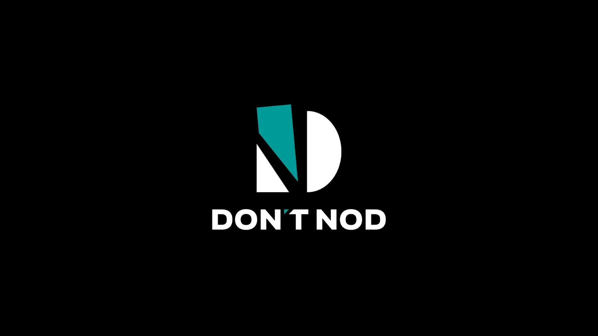

Luiso · 21 de octubre de 2026 · 3 min de lectura
El futuro de DON’T NOD, el estudio francés conocido por desarrollar experiencias narrativas como Life Is Strange, Jusant y Lost Records: Bloom & Rage, atraviesa un momento delicado. La compañía anunció que el Tribunal de Actividades Económicas de París aceptó su solicitud para iniciar un procedimiento de salvaguarda judicial, una medida destinada a proteger la continuidad de la empresa mientras busca una solución sostenible para sus problemas de financiación.
La decisión fue adoptada el 19 de octubre de 2026 y contempla un período inicial de observación de seis meses. Durante ese proceso, la compañía contará con un marco legal para reorganizar su situación financiera y explorar alternativas que le permitan mantener sus actividades. Además, las deudas contraídas antes de la apertura del procedimiento quedan congeladas durante su desarrollo, de acuerdo con la normativa aplicable.
Es importante aclarar que esto no equivale a una declaración de quiebra ni significa que el estudio haya cerrado sus puertas. La medida busca precisamente darle tiempo y herramientas para continuar trabajando mientras intenta resolver sus dificultades. Sin embargo, la propia empresa reconoció que su situación financiera representa una incertidumbre importante respecto de su capacidad para mantener las operaciones más allá del 31 de enero de 2027 si no consigue financiación externa.
Los resultados financieros del primer semestre de 2026 ayudan a entender la gravedad del escenario. DON’T NOD registró ingresos por aproximadamente 6,1 millones de euros, un descenso interanual del 14%, mientras que su pérdida de EBITDA operativo alcanzó los 4,3 millones de euros. Al cierre de junio, la empresa disponía de unos 9,9 millones de euros en efectivo y equivalentes, frente a los 15,5 millones registrados al terminar 2025.
La compañía también señaló que las ventas de Aphelion quedaron por debajo de sus expectativas, lo que afectó sus resultados. A esto se suma un contexto general complicado para la industria, marcado por una mayor dificultad para conseguir financiación y por la necesidad de ajustar los presupuestos de desarrollo.
La dirección sostiene que las medidas de reducción de gastos ya aplicadas permitieron moderar el consumo de efectivo, pero no alcanzaron para asegurar por sí solas los recursos necesarios para sostener todas las operaciones y los proyectos en curso. Por eso, el procedimiento judicial forma parte de una estrategia más amplia para encontrar financiación y adaptar la estructura del negocio.
La crisis también tiene consecuencias potenciales para los empleados. El 1 de septiembre, DON’T NOD había anunciado un nuevo plan de transformación organizativa que contempla concentrar las operaciones francesas en una única línea de producción. Según la empresa, los cambios podrían afectar hasta 85 puestos de trabajo en Francia. El estudio de Montreal, por su parte, no estaría alcanzado por ese ajuste anunciado y continúa trabajando en un proyecto narrativo financiado en colaboración con Netflix.
La empresa ya venía reduciendo costes desde finales de 2024, en un proceso que busca adaptar su estructura a un mercado cada vez más exigente. La apertura del procedimiento de salvaguarda suma una nueva instancia a esa reestructuración y deja en evidencia que los recortes, por sí solos, no resolvieron el problema financiero.
Por ahora, DON’T NOD no anunció el cierre de sus estudios ni la cancelación general de sus proyectos. El objetivo declarado es preservar sus activos, sus desarrollos y la experiencia de sus equipos mientras intenta construir una base financiera más sólida. Los próximos meses serán determinantes para saber si el creador de Life Is Strange consigue superar esta etapa sin comprometer su continuidad a largo plazo.
Cargando comentarios…